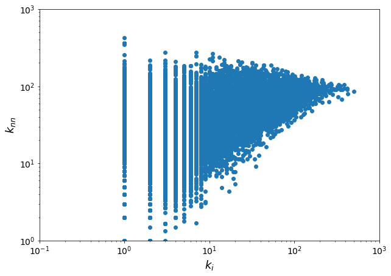
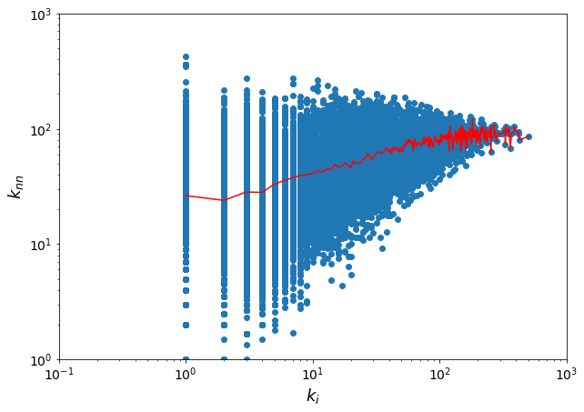
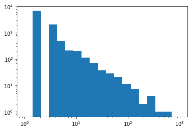

6. Network assortativity#
6.1. Data import#
import networkx as nx
import seaborn as sns
%pylab inline
Populating the interactive namespace from numpy and matplotlib
filepath = "./../datasets/ca-AstroPh.txt"
G = nx.Graph()
fh = open(filepath, "r")
for line in fh.readlines():
s = line.strip().split()
if s[0] != "#":
origin = int(s[0])
dest = int(s[1])
G.add_edge(origin, dest)
fh.close()
print("The graph has", len(G), "nodes and", len(G.edges()), "edges")
The graph has 18772 nodes and 198110 edges
6.2. Degree assortativity of a network#
Assortativity can be measured in different ways. A simple approach is measuring the average nearest neighbor degree to assess the level of degree-assortativity.
from collections import defaultdict
x = []
y = []
avg_knn = defaultdict(list)
for n in G.nodes():
k = G.degree(n)
total = 0
for j in G.neighbors(n):
total += G.degree(j)
avg_knn[k].append(float(total) / k)
x.append(k)
y.append(float(total) / k)
plt.figure(figsize=(10, 7))
plt.scatter(x, y)
plt.xlabel("$k_i$", fontsize=18)
plt.ylabel("$k_{nn}$", fontsize=18)
plt.xticks(fontsize=14)
plt.yticks(fontsize=14)
plt.yscale("log")
plt.xscale("log")
plt.axis([0.1, 1000, 1, 1000])
plt.show()

z = []
for k in sorted(avg_knn.keys()):
knn = np.array(avg_knn[k])
z.append(np.mean(knn))
plt.figure(figsize=(10, 7))
plt.scatter(x, y)
plt.plot(sorted(avg_knn.keys()), z, "-r")
plt.xlabel("$k_i$", fontsize=18)
plt.ylabel("$k_{nn}$", fontsize=18)
plt.xticks(fontsize=14)
plt.yticks(fontsize=14)
plt.yscale("log")
plt.xscale("log")
plt.axis([0.1, 1000, 1, 1000])
plt.show()

r = nx.degree_assortativity_coefficient(G)
print(r)
0.20512067898648886
The degree assortativity coefficient of a ER graph is zero. The ER graph has no correlations.
nnodes = 18000
plink = 0.00122
ER = nx.fast_gnp_random_graph(nnodes, plink)
nx.density(G)
0.0011244455715955115
ERr = nx.degree_assortativity_coefficient(ER)
ERr
-0.0009302115687502924
NetworkX offers a number of functions to compute the same quantity.
knn_avg2 = nx.average_degree_connectivity(G)
print(knn_avg2)
{75: 77.99882352941177, 31: 58.04037897586284, 43: 69.43556771545828, 2: 23.927865037812683, 90: 77.11203703703704, 42: 60.331389698736636, 118: 78.43502824858757, 30: 57.107625272331155, 113: 80.56814159292036, 3: 28.27523510971787, 28: 58.709793351302785, 8: 39.26327433628319, 158: 86.37341772151899, 13: 44.994888023369036, 77: 73.6357733175915, 36: 62.516007532956685, 257: 86.91439688715953, 12: 42.094705443698736, 134: 89.48258706467662, 55: 78.45880077369439, 171: 82.84210526315789, 86: 81.7296511627907, 15: 48.993356242840775, 274: 96.15328467153284, 47: 67.27006769825918, 91: 80.11648351648351, 22: 49.707849419303166, 150: 90.85555555555555, 14: 44.20594010800196, 6: 35.63912864775997, 52: 71.10063224446786, 67: 75.60914179104478, 108: 87.86516203703704, 27: 60.657407407407405, 142: 87.4906103286385, 62: 64.69180470793374, 7: 37.66788247213779, 61: 76.44262295081967, 49: 68.4408811143505, 132: 81.35950413223141, 41: 67.15829746532759, 5: 33.02613981762918, 32: 61.44760338345865, 20: 46.04779411764706, 50: 65.12612903225806, 56: 74.32245879120879, 18: 50.58738425925926, 44: 67.23400673400674, 81: 81.11552028218695, 9: 39.82104805392477, 84: 76.93650793650794, 123: 86.35040650406503, 120: 94.29166666666667, 82: 70.11293743372217, 59: 80.08916728076639, 10: 40.97029288702929, 109: 80.96238532110091, 21: 52.61680378957866, 72: 76.99714052287581, 33: 62.90030303030303, 103: 76.49393203883496, 93: 81.32453567937439, 19: 47.950607287449394, 60: 74.33186274509804, 48: 63.18070652173913, 222: 101.52477477477477, 40: 62.843686868686866, 154: 103.51298701298701, 66: 70.86293164200141, 220: 106.10909090909091, 24: 50.449945887445885, 152: 91.66973684210527, 323: 97.31424148606811, 115: 81.92028985507247, 34: 62.29171668667467, 271: 96.6309963099631, 53: 73.98842767295598, 4: 28.074249605055293, 336: 98.73214285714286, 297: 89.98653198653199, 1: 26.308352849336455, 89: 69.29775280898876, 25: 54.5074358974359, 175: 98.65904761904761, 162: 88.1358024691358, 16: 46.23848684210526, 99: 72.37373737373737, 46: 69.40893719806763, 73: 73.25939019001326, 68: 76.09684361549498, 39: 64.08641975308642, 292: 91.95547945205479, 138: 73.68478260869566, 26: 55.29113601630158, 63: 79.52910052910053, 169: 93.17455621301775, 333: 105.03603603603604, 143: 82.3076923076923, 100: 79.43166666666667, 29: 53.666815942678014, 11: 43.09002861545235, 88: 74.02093301435407, 128: 73.29427083333333, 178: 74.9119850187266, 57: 81.13241436925648, 156: 97.37606837606837, 76: 87.00952813067151, 105: 84.74502164502165, 58: 76.20862068965518, 136: 75.375, 104: 76.21016483516483, 85: 68.66252100840336, 97: 79.32371134020619, 45: 64.81346153846154, 111: 84.53153153153153, 38: 68.21468144044321, 185: 84.52162162162162, 362: 67.93646408839778, 174: 101.43218390804597, 17: 47.41758682995383, 51: 62.1376858435682, 121: 105.99380165289256, 117: 93.53525641025641, 54: 69.85, 74: 72.97406866325785, 65: 70.1940170940171, 80: 83.67164634146341, 112: 88.08516483516483, 369: 90.9810298102981, 188: 96.26595744680851, 166: 87.96626506024096, 64: 81.19609375, 71: 71.77288732394366, 427: 80.43091334894613, 98: 79.70222634508349, 420: 94.3, 213: 94.11854460093896, 163: 93.4877300613497, 107: 83.84687275341481, 102: 90.34531590413944, 173: 93.39306358381504, 139: 81.76169064748201, 95: 77.54331983805668, 23: 50.715701734624915, 70: 73.13809523809523, 281: 77.79715302491103, 504: 85.43253968253968, 126: 87.87301587301587, 149: 85.1241610738255, 140: 93.74642857142857, 153: 79.52178649237473, 96: 75.64518229166667, 133: 95.18233082706767, 83: 86.41949616648412, 35: 60.71684088269454, 155: 81.51935483870967, 144: 99.8013888888889, 92: 86.64208074534162, 122: 81.81762295081967, 229: 93.7292576419214, 87: 76.35249042145594, 151: 72.03311258278146, 125: 88.24177777777778, 141: 96.60141843971631, 235: 99.10212765957446, 135: 86.92407407407407, 69: 73.65309898242369, 37: 64.36090636090636, 129: 83.13510520487264, 110: 85.44415584415584, 79: 79.24367088607595, 78: 79.1693657219973, 119: 63.44897959183673, 147: 64.16780045351474, 114: 87.43771929824561, 116: 81.01970443349754, 157: 87.2823779193206, 176: 84.30113636363636, 124: 85.1568100358423, 269: 88.635687732342, 189: 83.88888888888889, 214: 91.26168224299066, 202: 79.53960396039604, 350: 90.66571428571429, 224: 81.52901785714286, 106: 87.84551886792453, 258: 82.6046511627907, 148: 105.83671171171171, 200: 96.535, 165: 69.9030303030303, 180: 76.67222222222222, 131: 79.16603053435115, 145: 92.95517241379311, 230: 79.82608695652173, 161: 66.29606625258799, 137: 91.67591240875912, 385: 94.33766233766234, 195: 98.8974358974359, 159: 95.35849056603773, 196: 72.54336734693878, 211: 100.37440758293839, 236: 76.05932203389831, 330: 73.30909090909091, 168: 88.16666666666667, 94: 81.00911854103343, 146: 84.51712328767124, 127: 65.42913385826772, 192: 85.25868055555556, 252: 87.78571428571429, 212: 92.3254716981132, 233: 96.50214592274678, 194: 82.03865979381443, 101: 77.85258525852585, 130: 78.21846153846154, 208: 92.1875, 172: 89.63953488372093, 190: 94.71578947368421, 197: 96.2741116751269, 351: 100.97150997150997, 387: 104.0, 181: 108.2707182320442, 329: 93.57142857142857, 313: 90.72843450479233, 249: 98.39759036144578, 418: 90.69377990430623, 270: 108.4962962962963, 219: 93.46575342465754, 256: 105.453125, 182: 121.41208791208791, 193: 90.60621761658031, 210: 71.16666666666667, 216: 102.31944444444444, 254: 62.42125984251968, 234: 89.0982905982906}
knn_avg3 = nx.k_nearest_neighbors(G) # deprecated though...
<ipython-input-19-e05b6910870d>:1: DeprecationWarning: k_nearest_neighbors function is deprecated and will be removed in v3.0.
Use `average_degree_connectivity` instead.
knn_avg3 = nx.k_nearest_neighbors(G) # deprecated though...
print(knn_avg3)
{75: 77.99882352941177, 31: 58.04037897586284, 43: 69.43556771545828, 2: 23.927865037812683, 90: 77.11203703703704, 42: 60.331389698736636, 118: 78.43502824858757, 30: 57.107625272331155, 113: 80.56814159292036, 3: 28.27523510971787, 28: 58.709793351302785, 8: 39.26327433628319, 158: 86.37341772151899, 13: 44.994888023369036, 77: 73.6357733175915, 36: 62.516007532956685, 257: 86.91439688715953, 12: 42.094705443698736, 134: 89.48258706467662, 55: 78.45880077369439, 171: 82.84210526315789, 86: 81.7296511627907, 15: 48.993356242840775, 274: 96.15328467153284, 47: 67.27006769825918, 91: 80.11648351648351, 22: 49.707849419303166, 150: 90.85555555555555, 14: 44.20594010800196, 6: 35.63912864775997, 52: 71.10063224446786, 67: 75.60914179104478, 108: 87.86516203703704, 27: 60.657407407407405, 142: 87.4906103286385, 62: 64.69180470793374, 7: 37.66788247213779, 61: 76.44262295081967, 49: 68.4408811143505, 132: 81.35950413223141, 41: 67.15829746532759, 5: 33.02613981762918, 32: 61.44760338345865, 20: 46.04779411764706, 50: 65.12612903225806, 56: 74.32245879120879, 18: 50.58738425925926, 44: 67.23400673400674, 81: 81.11552028218695, 9: 39.82104805392477, 84: 76.93650793650794, 123: 86.35040650406503, 120: 94.29166666666667, 82: 70.11293743372217, 59: 80.08916728076639, 10: 40.97029288702929, 109: 80.96238532110091, 21: 52.61680378957866, 72: 76.99714052287581, 33: 62.90030303030303, 103: 76.49393203883496, 93: 81.32453567937439, 19: 47.950607287449394, 60: 74.33186274509804, 48: 63.18070652173913, 222: 101.52477477477477, 40: 62.843686868686866, 154: 103.51298701298701, 66: 70.86293164200141, 220: 106.10909090909091, 24: 50.449945887445885, 152: 91.66973684210527, 323: 97.31424148606811, 115: 81.92028985507247, 34: 62.29171668667467, 271: 96.6309963099631, 53: 73.98842767295598, 4: 28.074249605055293, 336: 98.73214285714286, 297: 89.98653198653199, 1: 26.308352849336455, 89: 69.29775280898876, 25: 54.5074358974359, 175: 98.65904761904761, 162: 88.1358024691358, 16: 46.23848684210526, 99: 72.37373737373737, 46: 69.40893719806763, 73: 73.25939019001326, 68: 76.09684361549498, 39: 64.08641975308642, 292: 91.95547945205479, 138: 73.68478260869566, 26: 55.29113601630158, 63: 79.52910052910053, 169: 93.17455621301775, 333: 105.03603603603604, 143: 82.3076923076923, 100: 79.43166666666667, 29: 53.666815942678014, 11: 43.09002861545235, 88: 74.02093301435407, 128: 73.29427083333333, 178: 74.9119850187266, 57: 81.13241436925648, 156: 97.37606837606837, 76: 87.00952813067151, 105: 84.74502164502165, 58: 76.20862068965518, 136: 75.375, 104: 76.21016483516483, 85: 68.66252100840336, 97: 79.32371134020619, 45: 64.81346153846154, 111: 84.53153153153153, 38: 68.21468144044321, 185: 84.52162162162162, 362: 67.93646408839778, 174: 101.43218390804597, 17: 47.41758682995383, 51: 62.1376858435682, 121: 105.99380165289256, 117: 93.53525641025641, 54: 69.85, 74: 72.97406866325785, 65: 70.1940170940171, 80: 83.67164634146341, 112: 88.08516483516483, 369: 90.9810298102981, 188: 96.26595744680851, 166: 87.96626506024096, 64: 81.19609375, 71: 71.77288732394366, 427: 80.43091334894613, 98: 79.70222634508349, 420: 94.3, 213: 94.11854460093896, 163: 93.4877300613497, 107: 83.84687275341481, 102: 90.34531590413944, 173: 93.39306358381504, 139: 81.76169064748201, 95: 77.54331983805668, 23: 50.715701734624915, 70: 73.13809523809523, 281: 77.79715302491103, 504: 85.43253968253968, 126: 87.87301587301587, 149: 85.1241610738255, 140: 93.74642857142857, 153: 79.52178649237473, 96: 75.64518229166667, 133: 95.18233082706767, 83: 86.41949616648412, 35: 60.71684088269454, 155: 81.51935483870967, 144: 99.8013888888889, 92: 86.64208074534162, 122: 81.81762295081967, 229: 93.7292576419214, 87: 76.35249042145594, 151: 72.03311258278146, 125: 88.24177777777778, 141: 96.60141843971631, 235: 99.10212765957446, 135: 86.92407407407407, 69: 73.65309898242369, 37: 64.36090636090636, 129: 83.13510520487264, 110: 85.44415584415584, 79: 79.24367088607595, 78: 79.1693657219973, 119: 63.44897959183673, 147: 64.16780045351474, 114: 87.43771929824561, 116: 81.01970443349754, 157: 87.2823779193206, 176: 84.30113636363636, 124: 85.1568100358423, 269: 88.635687732342, 189: 83.88888888888889, 214: 91.26168224299066, 202: 79.53960396039604, 350: 90.66571428571429, 224: 81.52901785714286, 106: 87.84551886792453, 258: 82.6046511627907, 148: 105.83671171171171, 200: 96.535, 165: 69.9030303030303, 180: 76.67222222222222, 131: 79.16603053435115, 145: 92.95517241379311, 230: 79.82608695652173, 161: 66.29606625258799, 137: 91.67591240875912, 385: 94.33766233766234, 195: 98.8974358974359, 159: 95.35849056603773, 196: 72.54336734693878, 211: 100.37440758293839, 236: 76.05932203389831, 330: 73.30909090909091, 168: 88.16666666666667, 94: 81.00911854103343, 146: 84.51712328767124, 127: 65.42913385826772, 192: 85.25868055555556, 252: 87.78571428571429, 212: 92.3254716981132, 233: 96.50214592274678, 194: 82.03865979381443, 101: 77.85258525852585, 130: 78.21846153846154, 208: 92.1875, 172: 89.63953488372093, 190: 94.71578947368421, 197: 96.2741116751269, 351: 100.97150997150997, 387: 104.0, 181: 108.2707182320442, 329: 93.57142857142857, 313: 90.72843450479233, 249: 98.39759036144578, 418: 90.69377990430623, 270: 108.4962962962963, 219: 93.46575342465754, 256: 105.453125, 182: 121.41208791208791, 193: 90.60621761658031, 210: 71.16666666666667, 216: 102.31944444444444, 254: 62.42125984251968, 234: 89.0982905982906}
r2 = nx.degree_pearson_correlation_coefficient(G)
print(r2)
r_ER = nx.degree_pearson_correlation_coefficient(ER)
print(r_ER)
0.20512067898648823
-0.0009302115687495642
6.3. Comparisong with CM#
deg_seq = list(dict(G.degree).values())
CM_G = nx.configuration_model(deg_seq)
CM_G.number_of_nodes()
18772
knn_CM_G = nx.average_degree_connectivity(CM_G)
k1, k2 = np.mean(np.array(deg_seq)), np.mean(np.array(deg_seq) ** 2)
plt.figure(figsize=(10, 7))
plt.loglog(knn_CM_G.keys(), knn_CM_G.values(), "x", alpha=0.6, label="CM")
plt.loglog(knn_avg2.keys(), knn_avg2.values(), "o", label="ca-Astro")
plt.hlines(k2 / k1, np.min(deg_seq), np.max(deg_seq), colors="k", linestyles="dashed")
plt.legend()
<matplotlib.legend.Legend at 0x12842a790>
CM_Gs = nx.configuration_model(deg_seq, create_using=nx.Graph())
knn_CM_Gs = nx.average_degree_connectivity(CM_Gs)
plt.figure(figsize=(10, 7))
plt.loglog(knn_CM_G.keys(), knn_CM_G.values(), "x", alpha=0.6, label="CM")
plt.loglog(knn_CM_Gs.keys(), knn_CM_Gs.values(), "s", alpha=0.6, label="CMs")
plt.loglog(knn_avg2.keys(), knn_avg2.values(), "o", label="ca-Astro")
plt.hlines(k2 / k1, np.min(deg_seq), np.max(deg_seq), colors="k", linestyles="dashed")
plt.legend()
<matplotlib.legend.Legend at 0x1366003a0>
6.4. structural correlations#
from scipy.stats import zipf
a = 2.2
seq = zipf.rvs(a, loc=1, size=10000)
if np.sum(seq) % 2 != 0:
seq[0] = seq[0] + 1
plt.hist(seq, np.logspace(0, 3, 20))
plt.xscale("log")
plt.yscale("log")

k1, k2 = np.mean(np.array(seq)), np.mean(np.array(seq) ** 2)
gs = nx.configuration_model(seq)
pls_knn = nx.average_degree_connectivity(gs)
plt.figure(figsize=(10, 7))
plt.loglog(pls_knn.keys(), pls_knn.values(), "x", alpha=0.6, label="CMs")
plt.hlines(k2 / k1, np.min(seq), np.max(seq), colors="k", linestyles="dashed")
plt.legend()
<matplotlib.legend.Legend at 0x139f92d60>